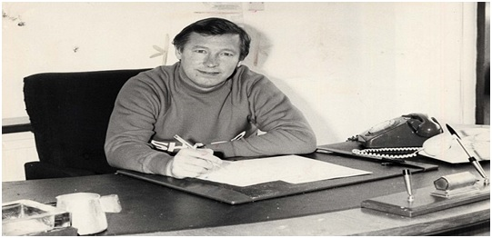
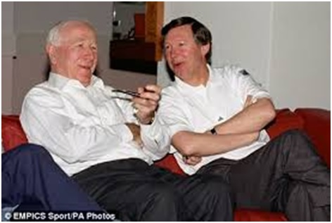

Chương 23

ừa nhậm chức, bận bịu trăm công ngàn việc, Alex Ferguson[1]vẫn tranh thủ đọc sách, tìm hiểu mọi thứ về Manchester United. Ông hiểu rõ: Khi đến làm việc tại nơi nào, cần phải nắm kỹ về văn hóa nơi ấy, phải hiểu được tâm hồn nơi ấy, mới có thể thành công. Chẳng bao lâu, ông đã nhớ nằm lòng không sót một chi tiết về lịch sử Quỷ Đỏ, về các cầu thủ huyền thoại, các trận cầu đáng nhớ trong quá khứ, cả những “giai thoại” được dân gian truyền miệng nữa. Ferguson cố gắng thu xếp đến gặp gỡ, làm quen với từng nhân viên ở Old Trafford, dù số lượng nhân viên tại đây lên đến…172 người.
Trong những yếu nhân United, người khiến Ferguson nể phục nhất chính là Sir Matt Busby. Khác với những người tiền nhiệm, Fergie không sợ bị Busby can thiệp vào công tác chuyên môn; vì theo ông, Sir là một bậc “đại sư” lão luyện, ý kiến của Sir tất phải đáng nghe. Mỗi ngày đi làm, Ferguson đều ghé qua văn phòng Busby, thò đầu vào hỏi thăm: Khỏe chứ, bố già? Busby ngó ra, đáp: Khỏe lắm, con trai; rồi hai ông nhìn nhau cười ha hả.
Những khi có chút thời gian, Ferguson hay đến thỉnh giáo Sir Matt. “Ai đó khó chịu vì Matt Busby chứ tôi không hề”, ông chia sẻ, “Tôi thích được ngồi trò chuyện với cụ ấy. Tôi ước chi cụ trẻ lại, để mình được học hỏi nhiều thêm”. Hiển nhiên, những lời của Ferguson là tự đáy lòng, bởi lúc này Sir Matt đã không còn thế lực, ông chẳng việc gì phải lấy lòng Sir như Docherty ngày xưa.
Tuy nhiên, càng nhìn vào Matt Busby và quá khứ huy hoàng của Quỷ Đỏ, Ferguson càng thấy sự tương phản với hiện tại. United mà Ferguson thừa hưởng từ Atkinson có quá nhiều vấn đề; nó tựa một cây cổ thụ bề ngoài vẫn xum xuê, nhưng bên trong đang mục ruỗng, sẽ đổ kềnh nếu không được cứu chữa kịp thời.

Alex Ferguson đặt bút ký hợp đồng làm HLV trưởng Manchester United (Ảnh: Dailymail.co.uk)
Dưới quyền Atkinson, 10 giờ 30 mỗi sáng, ông thầy mới đến sân tập The Cliff, còn học trò đủng đỉnh đến sau. Mỗi ngày, cầu thủ tập đã ít, mà bài tập lại nhẹ; có những anh lười trốn tập, Ron lớn cũng không để ý đến. Tập tành như thế, chẳng trách gì thể lực đa số cầu thủ rất kém. Colin Gibson, người từng khoác áo cả United lẫn Aston Villa, nhận xét: “Cầu thủ Manchester yếu đến kinh ngạc. Ở Villa, chúng tôi khỏe hơn nhiều. United có nhân tài chứ không phải không, nhưng dưới quyền Ron, ai cũng lười chảy thây ra, nên không phát huy được hết năng lực. Những bài tập của Ron bài nào cũng dễ, đứng tè một cái cũng xong! Cứ chia ra mỗi bên năm người đá chơi chơi, xong rồi tập chạy một tý, thế rồi xách giỏ về nhà”.
Ở Villa, khi chạy thi, Gibson chỉ thuộc hạng trung bình. Sang United, anh luôn về nhất, ngang với Bryan Robson! Yếu và thể lực và sức bền so với các đối thủ, nên Quỷ Đỏ không sao về nhất trong cuộc đua dài hơi như giải Hạng Nhất.
Về chiến thuật, học trò cũng không phục Ron. “Fergie kỹ lưỡng đến từng chi tiết”, Gibson tiếp, “Trước trận đấu, ông ấy phân tích kỹ càng: Đối phương mạnh ở điểm nào, điểm nào, còn Ron thì chỉ quẳng lên bàn đội hình của đối thủ rồi nói: Đấy! Đội hình chúng nó đấy! Bây giờ ra sân xử bọn chúng đi! Chúng ta mạnh hơn nhiều!”. “Mỗi khi chiến thắng, Ron chỉ ăn mừng”, Frank Stapleton bổ sung, “Không hề phân tích đội đã chơi ra sao, không hề có họp tổng kết. Ferguson thì trái ngược hoàn toàn, lúc nào cũng chi tiết, chi tiết, chi tiết. Dù thắng dù thua, không lúc nào thiếu những chi tiết cần phân tích, mổ xẻ.”
Ferguson nhận thấy cần phải cải tổ United tận gốc. Thay vì bắt đầu tập lúc 10 giờ 30, ông đến The Cliff từ sáng sớm, ra lệnh cho cầu thủ phải có mặt đúng chín rưỡi. Ai đến trễ đều bị phạt chạy quanh sân bóng một hai, vòng. Ông cũng đưa ra hàng loạt bài tập mới, buộc học trò phải tập nặng hơn để nâng cao thể lực. Mỗi ngày, cầu thủ được tập xen kẽ nhiều bài khác nhau để tránh nhàm chán: Hết đá banh “khờ” thì rèn luyện tình huống cố định, hết tình huống cố định thì đến tập chiến thuật, tập chiến thuật xong chuyển qua kéo giãn động,…Những bài tập chạy nước rút đặc biệt được chú trọng. Cái hay của Ferguson ở chỗ ông biết giữ trung đạo, không “vôvi” như Atkinson đã đành, mà cũng không sa đà vào những lý thuyết hàn lâm như Sexton.
Kỷ luật đội bóng nhanh chóng được siết chặt. Khi đến sân tập, cầu thủ phải ăn mặc chỉnh tề, tóc tai gọn gàng. Người nào để tóc bờm xờm hay râu ria rậm rạp bị bắt phải cạo. Đến nhuộm tóc cũng bị cấm tiệt. Ai nấy buộc phải ăn uống theo đúng dinh dưỡng, bớt thịt, nhiều rau xanh, dù chán ngấy cũng phải chịu. Phòng thay đồ lúc trước chẳng ai lo, bẩn thỉu như chuồng heo, nay nhận lệnh từ Ferguson, được lau chùi sạch như ly.
Cũng nhằm chấn chỉnh kỷ luật, Ferguson quyết tâm bài trừ văn hóa “nhậu”. Thời Atkinson, Old Trafford có nội quy: Trước trận đấu hai ngày, không được uống rượu, nhưng do Ron không nghiêm, nên chẳng ai theo. Nay Ferguson sửa lại luật: Không những trước trận đấu hai ngày, mà hễ ngày nào phải ra sân tập, ngày đó không được uống. Ông lại thiết lập một hệ thống “mật vụ” để bám sát cầu thủ. “Thám báo” của ông đa phần là fan hâm mộ, mà fan thì có mặt khắp nơi, nên hễ cầu thủ nào vi phạm nội quy liền bị phát hiện ngay.
Không chỉ nhờ người khác, dẫu bản thân bận bịu, Ferguson cũng đích thân đi làm “điệp viên”.Tối đến, thỉnh thoảng ông lại gọi cho cầu thủ, thậm chí đích thân lái xe đến, để kiểm tra xem họ có nhà hay không.Tuy vậy, giang sơn dễ đổi, bản tính khó dời, phải mất một thời gian rất dài, Fergie mới đẩy lùi được tệ nạn. Đẩy lùi thôi, chứ không diệt được hẳn, song như thế đã là tốt.
Bên cạnh việc thiết lập kỷ cương, vị tân HLV còn bỏ nhiều công sức tái thiết hệ thống tuyển trạch tại CLB mới. Săn tìm, đào tạo tài năng trẻ luôn là trọng tâm hàng đầu của Ferguson, bởi ông có cùng quan điểm như Matt Busby trước kia: Cầu thủ mua từ bốn phương, rất khó kết hợp với nhau thành một tập thể đoàn kết, hài hòa, sao bằng xây dựng một đội hình gồm những chàng trai lớn lên cùng nhau, trưởng thành cùng nhau, coi nhau như người một nhà?
Khi đặt chân đến Old Trafford, Ferguson choáng váng trước chất lượng quá thấp của đội hình hai và đội trẻ United: Một CLB từng cho ra lò thế hệ “đồng ấu Busby”, nay lại như thế này sao? Ông gọi ngay Eric Harrison lên, than phiền chuyện đội trẻ không sản xuất được nhân tài.
- Ông nói gì cơ? – Harrison nhướng mắt – Thế Mark Hughes và Norman Whiteside ông bỏ đi đâu?
- Được đấy, nhưng tôi cần nhiều cầu thủ như thế nữa.
- Vậy ông phải lo cho tôi đầu vào chứ. Đầu vào tốt thì đầu ra sẽ tốt. Tôi sẽ đào tạo cầu thủ giỏi cho ông.
Harrison nói có lý. Vấn đề thật sự nằm ở khâu tuyển trạch, vốn từ lâu bị xao lãng. Aberdeen thời Ferguson nắm quyền có đến 13 tuyển trạch viên, trong khi United chỉ có bốn người. Ít như vậy nên chỉ loanh quanh tìm nhân tài ở Manchester và khu vực Tây Bắc nước Anh. Cầu thủ trẻ địa phương đa phần chọn Manchester City, hay thậm chí là Oldham và Crewe, chứ không đến với United.
Theo thời gian, Ferguson thuê thêm mười tám tuyển trạch viên mới, lập đội bóng nhi đồng ở Glasgow, nâng cấp trung tâm đào tạo ở Old Trafford,và mở thêm hai trung tâm: Một tại County Durham, một tại Belfast. Năm 1988, ông bổ nhiệm cựu danh thủ Brian Kidd vào vị trí trưởng ban đào tạo trẻ. Kidd và đồng đội cũ Nobby Stiles, cùng Eric Harrison, sẽ đào tạo ra một thế hệ vàng, tên tuổi sáng ngang những bậc tiền bối thập niên 1950.
Không như Matt Busby khoán trọn đội trẻ vào tay Jimmy Murphy, và công tác tuyển trạch cho Joe Armstrong, Ferguson quan tâm mọi việc từ A đến Z. Mỗi khi quyết định tiếp nhận một cậu bé nào, ông đích thân đến tận nhà nói chuyện cùng phụ huynh cậu ta. Các bậc phụ huynh đều cảm động, vì HLV trưởng các đội khác đâu ai chịu hạ mình làm những chuyện như thế. Nhờ sự tích cực của Ferguson, các trung tâm đào tạo của United dần dần hút hết học viên bên Manchester City.
Thu hút được học viên rồi, Ferguson luôn giành thời gian quan sát, theo dõi sát sao quá trình tiến triển của họ. Cầu thủ đội trẻ nhiều như vậy, nhưng ông nhớ rõ tên tuổi, điểm mạnh, điểm yếu từng người. Các thiếu niên được ông thường xuyên đến thăm, động viên, đều lấy làm cảm động. “Ron chẳng bao giờ quan tâm đến chúng tôi”, cầu thủ trẻ Russell Beardsmore nhớ lại, “Tôi nói chuyện với Alex trong 3-4 ngày nhiều hơn với Ron trong 3-4 năm.”
Đọc những trang trên, cảm tưởng rằng cuộc cách mạng của Fergie diễn ra chóng vánh. Kỳ thực, đó là một quá trình. Phải mất một thời gian dài, tình hình tại Old Trafford mới được cải thiện, dần dần đi lên. Thế nên trước khi đạt đến thành công vĩ đại, Ferguson phải trải qua những năm truân chuyên, có lúc sinh mạng HLV như treo đầu sợi tóc. Trong chương kế, chúng ta sẽ tìm hiểu những năm tháng ấy.

Alex Ferguson đàm đạo cùng Sir Matt Busby (Ảnh: Dailymail.co.uk)
Chú thích:
[1] Về Alex Ferguson, chúng tôi đã viết kỹ trong cuốn Sir Alex Ferguson – Chân Dung Một Huyền Thoại (2012). Chương này về cơ bản chính là chương 19 trong sách trên, được bổ sung, chỉnh sửa một số chi tiết.